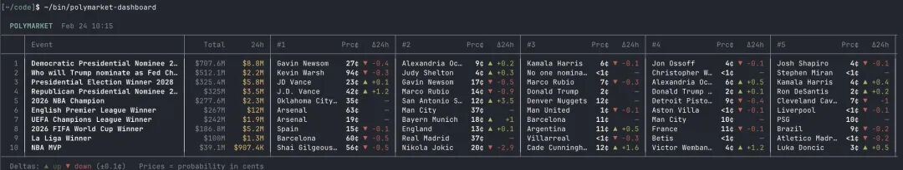
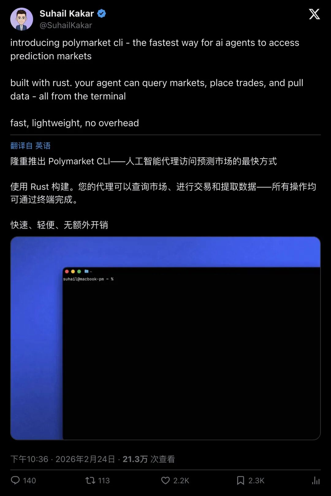
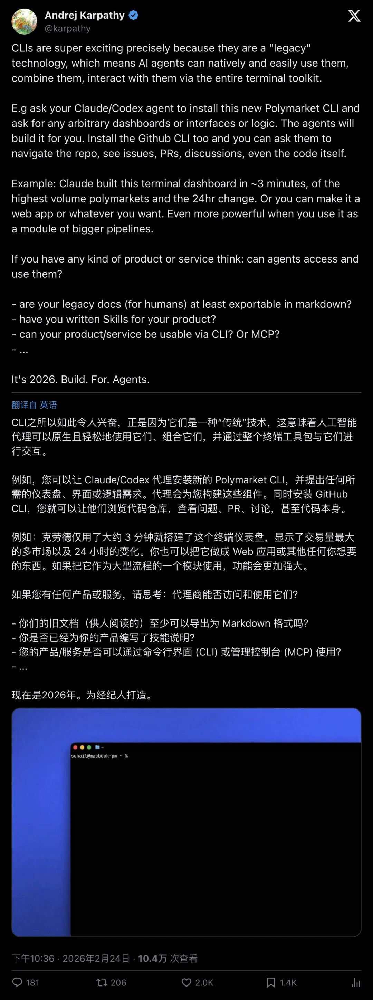
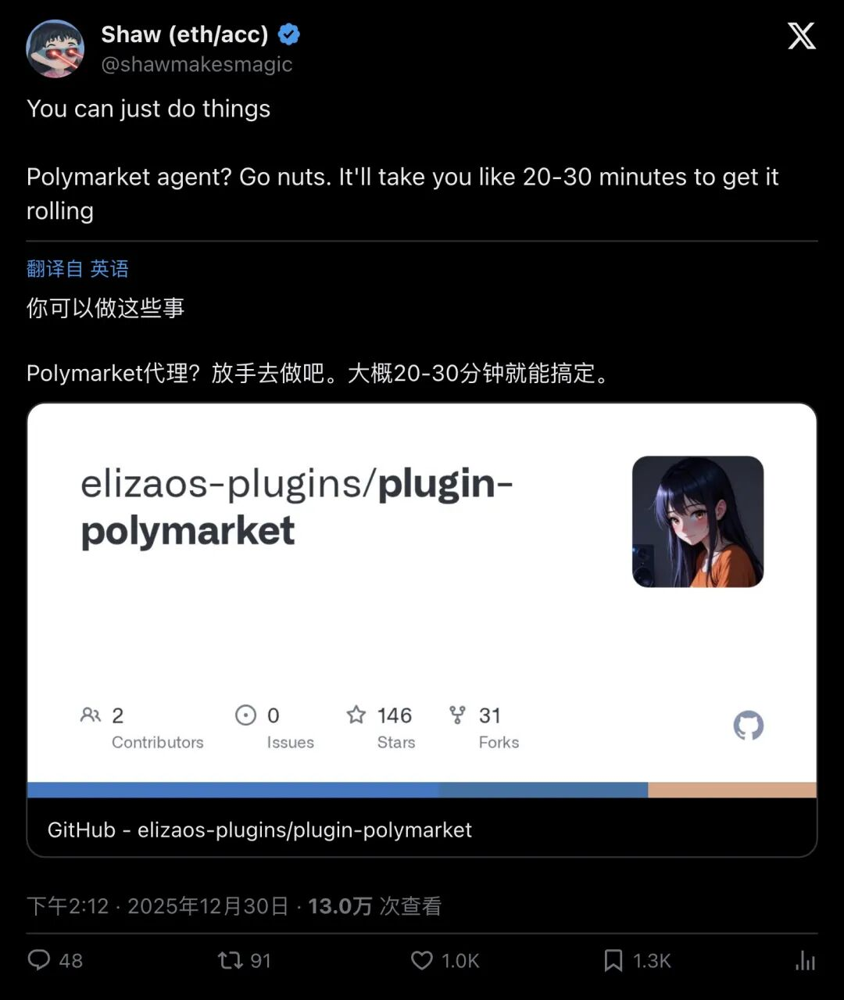

刚刚，Polymarket放出「AI交易核武器」：你的AI Agent现在能自己炒预测市场了！

AI Agent的「交易终端」来了
2026年2月24日，Polymarket开发者Suhail Kakar在推特上丢出了一条炸裂消息：
Polymarket CLI正式发布。
这个用「Rust」构建的命令行工具，做的事情简单粗暴——让AI Agent直接通过终端访问预测市场。查询市场行情、下单交易、提取数据，所有操作一行命令搞定。
"introducing polymarket cli - the fastest way for ai agents to access prediction markets. built with rust. your agent can query markets, place trades, and pull data - all from the terminal. fast, lightweight, no overhead"
「介绍Polymarket CLI——AI代理访问预测市场的最快方式。使用Rust构建。你的代理可以查询市场、下单交易和提取数据——所有操作都在终端中完成。快速、轻量、无开销。」

▲ Suhail Kakar宣布推出Polymarket CLI，近29万人浏览，2500+点赞
这条推文的数据本身就说明了一切：2509个赞，128次转发，149条评论，2635个收藏。近29万次浏览。
这不是一个普通的开发者工具发布。这是一个信号。
为什么用Rust？因为要快到AI反应不过来都不行
Suhail选择Rust来构建这个CLI，背后的逻辑很清楚。
预测市场的核心是速度。行情瞬息万变，一条突发新闻出来，赔率可能在几秒内剧烈波动。人类交易员反应再快，也快不过机器。而AI Agent要在这个战场上生存，它的工具链必须足够快、足够轻。
Rust的特点正好对上了：零开销抽象，内存安全，编译级性能。没有垃圾回收的停顿，没有运行时的拖累。一个AI Agent挂上这个CLI，从接收信号到下单执行，中间的延迟可以压到极致。
用Suhail自己的话说：fast, lightweight, no overhead（快速、轻量、无开销）。
这三个词，就是给AI Agent量身定做的。
不只是CLI：一整套「AI赌神」开发框架
如果你以为Polymarket只是出了个命令行工具，那你低估他们了。

▲ 围绕Polymarket CLI的讨论持续发酵
在GitHub上，Polymarket早就放出了一个叫Polymarket Agents的开源仓库。这是一个完整的开发者框架，专门用来构建预测市场的AI Agent。
看看这个仓库的配置：
·2300+ Stars，547个Fork，23个Watcher
· 采用MIT许可证，完全免费开源
· 代码99.6%用Python写成
功能清单更是让人倒吸一口凉气：
· 与Polymarket API深度集成
· 预测市场专用的AI Agent工具集
· 本地和远程RAG（检索增强生成）支持
· 从投注服务、新闻提供商和网络搜索自动获取数据
· 完整的LLM提示工程工具链
"Polymarket Agents is a developer framework and set of utilities for building AI agents for Polymarket. This code is free and publicly available under MIT License open source license!"
「Polymarket Agents是一个用于构建Polymarket AI代理的开发者框架和工具集。该代码是免费且公开可用的，采用MIT许可证！」
翻译成人话：Polymarket把造AI赌神的全套图纸，免费公开了。
任何开发者，只要有基本的编程能力，就可以用这套框架搭建自己的AI交易Agent。它能自动抓取新闻、分析数据、评估概率，然后直接在预测市场上下注。
细思极恐：当AI开始自己「赌」未来
这件事真正恐怖的地方在哪？
想象一下这个场景：一条关于某国总统选举的突发新闻刚刚出现在路透社的wire上。0.3秒后，一个AI Agent已经读完了全文，交叉验证了5个信源，计算出这条新闻对选举赔率的影响，然后通过Polymarket CLI下了单。
整个过程，没有任何人类参与。

▲ 社区围绕AI Agent自主交易展开热烈讨论
而且这还只是单个Agent的情况。如果有成百上千个AI Agent同时在预测市场上博弈呢？它们会形成自己的「市场生态」，用人类完全无法理解的速度和逻辑进行交易。
Foresight News在报道中也注意到了这一点：
"Polymarket developer Suhail Kakar announced the launch of the Polymarket Command Line Interface (CLI) to facilitate access for intelligent agents. Built with Rust, users' AI agents can query markets, conduct trades, and extract data—all operations can be completed via the terminal."
「Polymarket开发者Suhail Kakar宣布推出Polymarket命令行界面（CLI），以方便智能代理访问。该CLI使用Rust构建，用户的AI代理可以查询市场、进行交易和提取数据——所有操作都可以通过终端完成。」
预测市场一直被认为是「群体智慧」的最佳体现——大量人类用真金白银投票，汇聚出对未来事件的概率判断。但现在，这个「群体」里要加入大量非人类玩家了。
这意味着什么？
对开发者来说，这是一个巨大的机会。MIT开源协议意味着零门槛，Rust CLI意味着高性能，Python框架意味着易上手。三件套齐活，造一个AI交易Agent的成本被压到了前所未有的低。
对预测市场来说，这可能是一次根本性的变革。当AI Agent大量涌入，市场的效率会被推到极致——任何信息不对称都会在毫秒级被消灭。但同时，市场的波动性和不可预测性也可能急剧上升。
对所有人来说，这是一个值得警惕的信号。AI已经从「帮人类写代码」进化到了「自己在金融市场上交易」。下一步呢？
当你的AI Agent比你更会判断未来，你还需要自己做决定吗？
— END —